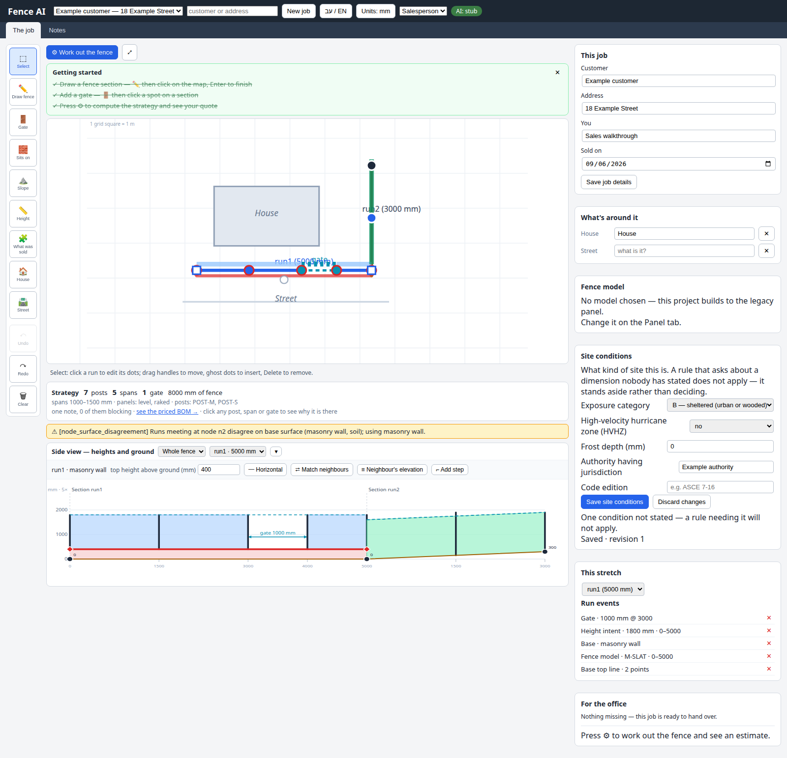

01
A signed job, step by step.
One customer. The original sketch. A layout the office can understand.
Recorded fenceGate / selected range
Ground, base & fenceUnfolded A-B / B-C
GroundWall / concreteFence
Preview only. Nothing is sent.
What is proposed, and what exists today?
Keep the existing workspace
Measured drawing, height/base/model tools, notes, side views and Undo/Redo already exist. These screens propose clearer sources, selection, editing and review. They are not screenshots of implemented changes.
See the current app walkthrough Read the studies and research
Current application screenshot